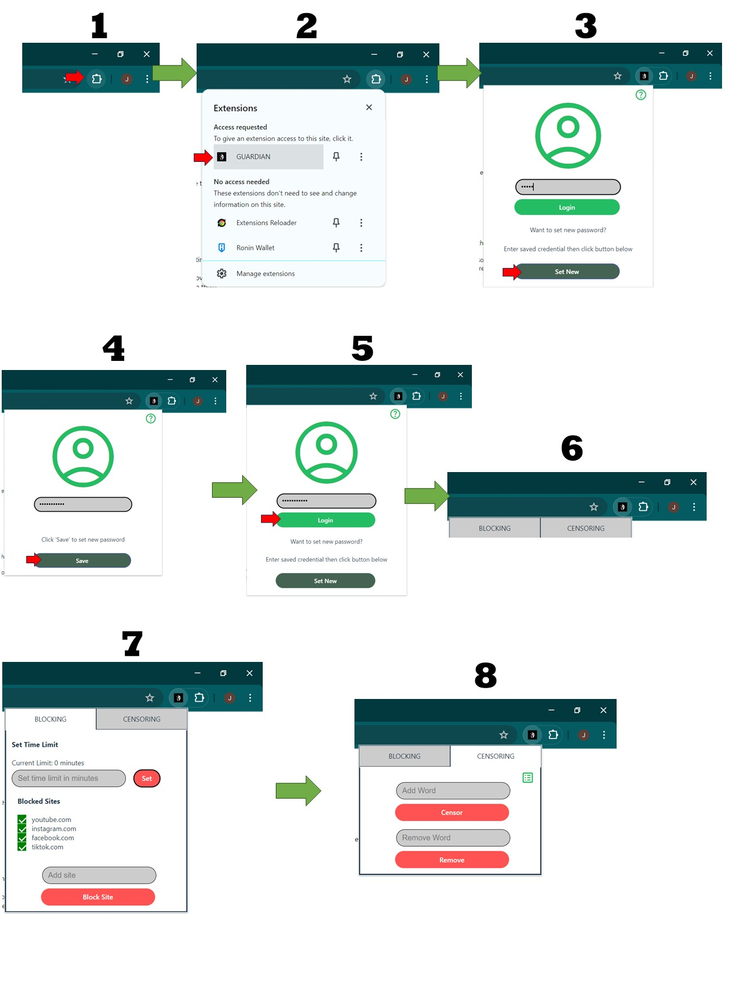

Hi, Welcome to GUARDIAN-TUTORIAL!
We are here to help you navigate through our GUARDIAN extension.
First of all, what is GUARDIAN?
GUARDIAN
is a Google Chrome extension designed to allow parents/guardians to set a
limited daily browsing time for their children/wards on various sites. This
is to ensure that they do not spend too much time on the internet.
Also, it can censor profane words, both in English and Filipino when
accessing X (Twitter).
How to use GUARDIAN?
1. Upon installing the extension, you can see its icon and name in the list
of your extensions.
2. Click this to open the GUARDIAN popup.
3. You will be asked for a password to access the settings. The default
password is "admin".
4. Once you have entered the password, you can now set a new password. Be
sure to keep it a secret frome the children so they won't be able to change
the settings.
5. Upon entering the new password, you will be able to see two tabs:
"BLOCKING" and "CENSORING".
6. In the "BLOCKING" tab, you can set the daily browsing time for the day.
You can also add new sites to block aside from the default ones and you can
also remove them.
Note: The timer will restart everyday.
7. In the "CENSORING" tab, you can add new profane words to censor aside
from the default ones and you can also remove them.
Note: The censoring will only work on X (Twitter).
Note: You cannot remove default words from the list, only the ones you've
added. Click on the icon to see full list of the words to be censored.
